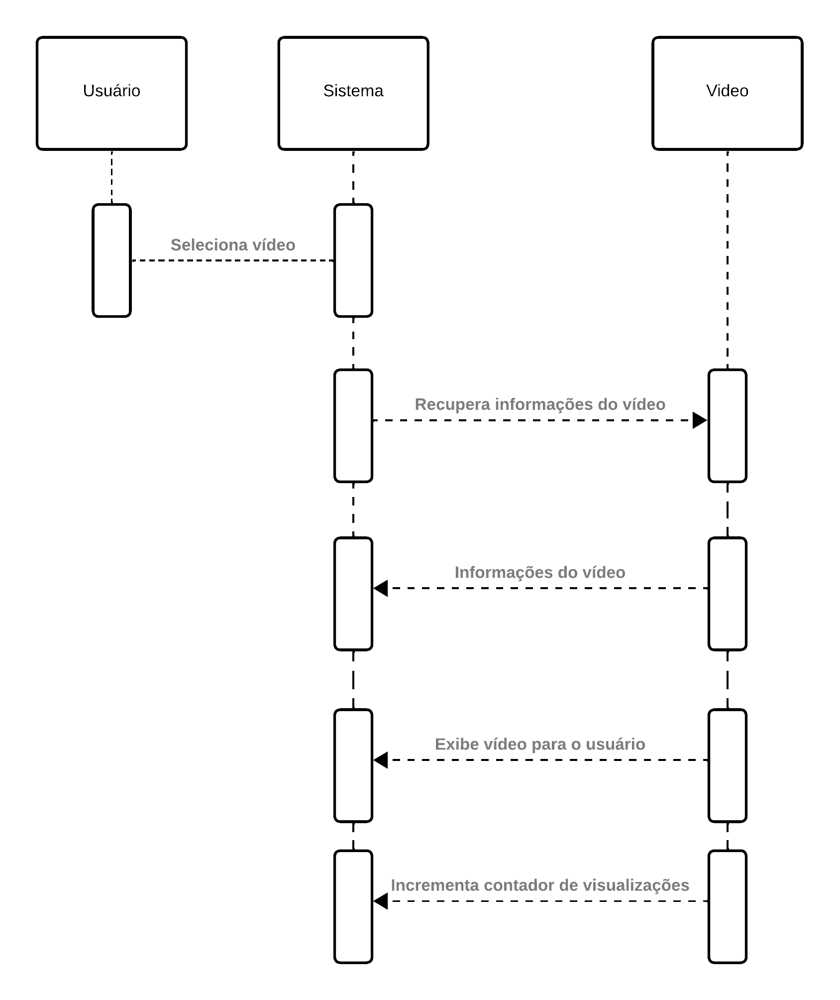
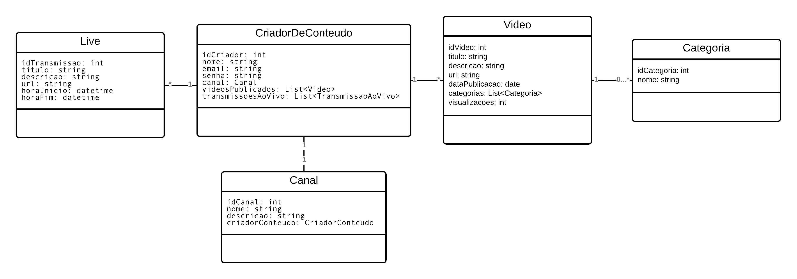

Visão Geral
No âmbito da arquitetura do projeto, citaremos três camadas fundamentais que colaboram para o funcionamento e eficiência do sistema. Essas camadas são estrategicamente definidas para assegurar uma separação clara de responsabilidades e facilitar o desenvolvimento, manutenção e escalabilidade do projeto.
Camadas da Arquitetura
Camada de Apresentação: Esta camada concentra-se na interface do usuário e na interação direta com os clientes.
-
Aqui, os principais componentes incluem elementos visuais e lógica associada à apresentação de informações.
-
A regra fundamental desta camada é gerenciar exclusivamente a experiência do usuário, garantindo uma apresentação clara e acessível dos dados.
Camada de Lógica de Negócios: Abriga os componentes responsáveis por processos e operações centrais. Aqui, definimos as regras de negócios, manipulação de dados e a lógica que governa o comportamento do sistema.
Componentes:
- Autenticação de usuários: Responsável por validar e autenticar usuários no sistema.
- Autorização de usuários: Define as permissões e níveis de acesso para diferentes tipos de usuários.
- Regras: Apenas usuários autenticados podem acessar determinadas funcionalidades. Restrições de acesso com base nos papéis atribuídos a cada usuário.
Camada de Dados: A sustentação do sistema reside na Camada de Dados, onde os principais componentes estão associados ao armazenamento, recuperação e gerenciamento de dados. As regras nesta camada delineiam as operações de acesso aos dados e garantem a integridade e segurança das informações armazenadas.
Componentes:
- Controlador de Acesso a Banco de Dados: Gerencia a comunicação entre a aplicação e o banco de dados.
- Serviços de Cache: Otimiza o desempenho armazenando em cache dados frequentemente acessados.
- Regras: Estabelece políticas de acesso aos dados e implementa estratégias eficientes de armazenamento em cache.
Diagrama de Sequência
Diagrama de sequência para usuário visualiza vídeo 
Diagrama de Classes
Diagrama de classes para o módulo de vídeos 